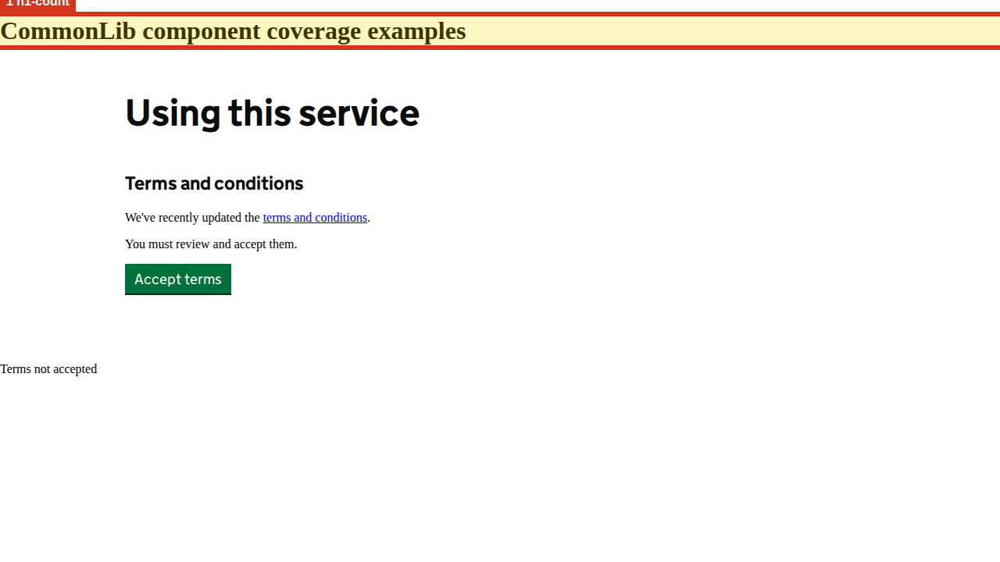

Show highlighted page image

1. h1-count
Expected exactly one visible h1, found 2.
Selector: h1
Developer advice
Heading convention — inspect the page hierarchy
Where to look
- Page
- http://localhost:4200/coverage?feature=terms
- Selector
h1- Element
h1- Name hint
- CommonLib component coverage examples
- Landmark
- header
- Why this matters
- Heading navigation helps screen-reader users understand the page and locate its main subject.
- What to fix
- Check all page headings, including shared banners. Follow the GOV.UK convention of one main page h1; choose other levels by section hierarchy, not visual size. Multiple h1 elements alone do not establish a WCAG failure.
- How to verify
- Inspect every h1 and navigate the heading list with a screen reader. Confirm the main heading identifies this page state and section levels reflect the content.
- Guidance
- W3C WAI: page headings
- Related WCAG criteria
- GOV.UK heading convention; not a standalone WCAG failure. Review 1.3.1 (A) and 2.4.6 (AA) in context. Criteria refer to WCAG 2.2; unless noted, they also existed in WCAG 2.0.
DOM hints and source investigation
search selector h1
These are rendered DOM clues, not a verified source-file mapping. Match the selector and nearby text in the route component/template. The excerpt may be truncated.
{
"tag": "h1",
"accessibleName": "CommonLib component coverage examples",
"nearestLandmark": "header"
}Captured DOM excerpt
<h1>CommonLib component coverage examples</h1>